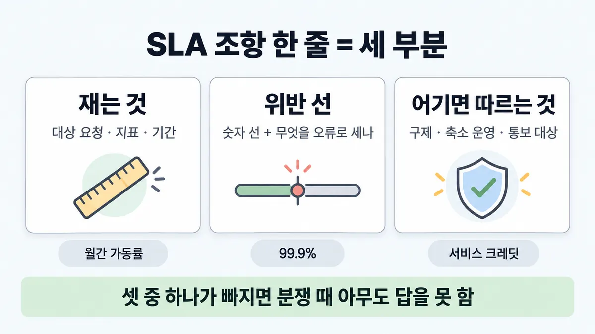
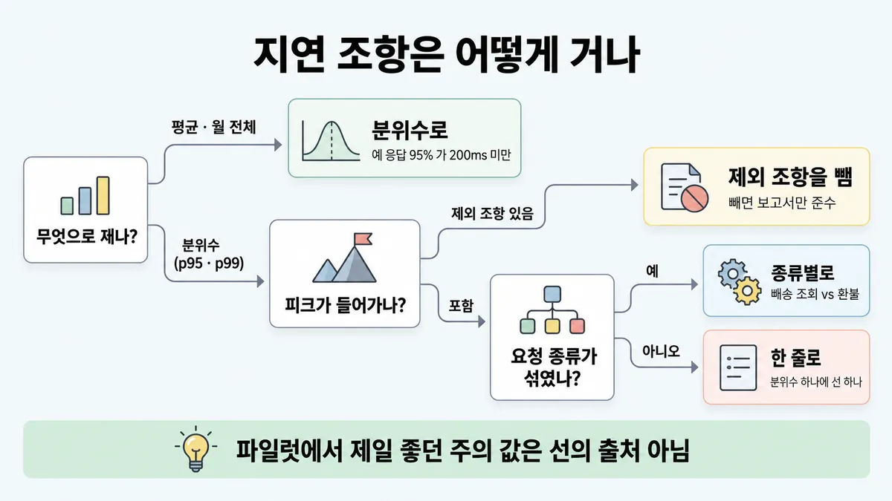
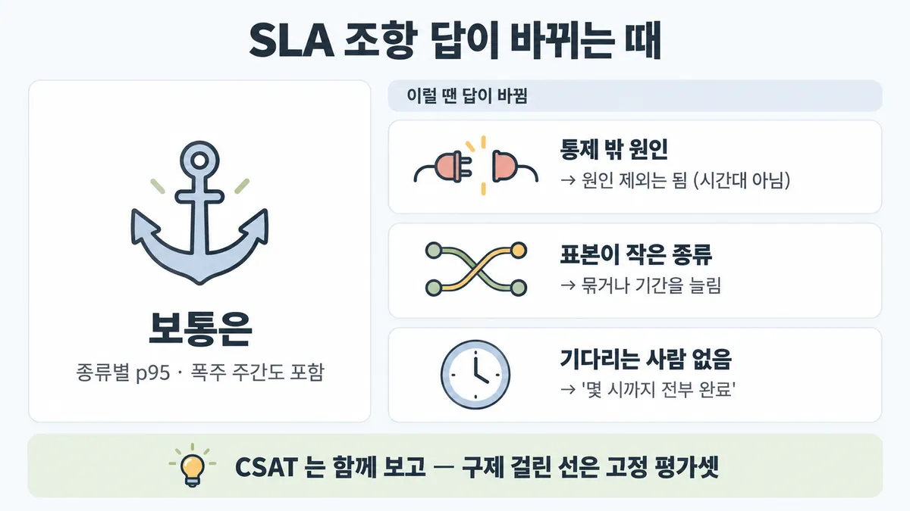

■ SLA 조항 쓰기
표시가 없는 문장은 공식 문서에서 확인한 내용이에요. 다른 표시는 읽는 법
왜 배우나 — 시험이 요구하는 것
시험 목표 6.3 피드백과 기대 맞추기 · D6 사람·문서 14%Manage stakeholder feedback loops and expectation alignment (including SLAs)
이 개념으로 푸는 판단 (할 수 있어야 하는 것)
- 6.3① "AI 답변이 항상 정확하다고 계약서에 넣어 달라" — 무엇을 약속하나? — 기대치 맞추기 (100% 대신 측정된 SLO + 사람 안전망)
한눈에
약속 한 줄 = 무엇을 재나(대상 요청 · 지표 · 기간) + 무엇이 위반인가(선) + 어기면 무엇이 따르나(구제 · 축소 운영 · 통보 대상). 셋 중 하나가 빠지면 분쟁 때 아무도 답을 못 함 업계 일반 Anthropic 문서에 SLA 조항 양식 없음
공식에서 가장 가까운 것 : 좋은 기준 문장 = 대상 집합(held-out 평가셋) + 지표 + 선을 한 문장에, 여러 차원으로("95% response time < 200ms" 포함) · 오류의 뜻도 따로 정의 (성공 기준 문장 — SLA 조항으로 넓힌 건 해석)
무엇을 약속하고 무엇은 안 하나(100% 금지 · 코드 한도 · 사람 안전망)는 ◆ 100% 약속 vs 측정된 SLO + 사람 안전망. 여기는 약속 문장을 어떻게 쓰나
비유 클라우드 SLA 한 줄 = 측정 대상(월간 가동률) · 선(99.9%) · 보상(서비스 크레딧). "가장 바쁜 주는 측정에서 제외" 같은 조항이 속이는 습관


ELI5
택배 회사와 "이틀 안에 배달, 늦으면 배송비를 돌려준다"는 약속을 쓴다고 해 봐요.
- 어느 택배를, 며칠 안에 받는지(무엇을 재나)를 적어요.
- 어디서부터 늦은 건지(선)와, 늦으면 무엇을 해 주는지(구제)도 적어요.
- 명절처럼 제일 바쁜 때를 빼고 재면, 약속은 지킨 것처럼 보여도 사람들은 화가 나요.
- 그래서 바쁜 때도 넣고, 누가 다시 재도 같은 숫자가 나오게 써요.
개념 설명
원리
조항 한 줄의 세 부분 (업계 일반 — Anthropic 문서에 SLA 조항 양식 없음)
- 무엇을 재나 : 대상 요청(어느 요청 종류) · 지표 · 측정 기간.
- 무엇이 위반인가 : 숫자 선 + 무엇을 오류로 세나.
- 어기면 무엇이 따르나 : 크레딧 등 구제 · 미리 합의한 축소 운영 · 통보 대상.
- 하나라도 빠지면 분쟁 때 "위반이냐, 그래서 뭘 하냐" 에 아무도 답을 못 함.
- 공식에서 가장 가까운 것 : 좋은 성공 기준 문장 = 대상 집합(held-out 평가셋) + 지표 + 선을 한 문장에, 여러 차원으로. "불편 · 심각" 같은 오류의 뜻도 따로 정의 (define-success). SLA 로 넓힌 건 해석.
지연 조항이 속기 쉬운 곳
- 평균은 안 됨 — 분위수로 (본편 ◆ 100% 약속 vs 측정된 SLO + 사람 안전망).
- 분위수여도 피크를 빼면 소용없음. 고객지원에 Claude 를 쓰는 이유 자체가 성수기 급증을 인력 없이 받는 것(공식) — 그 주를 빼면 약속이 가장 필요한 때를 지표에서 지움.
- 요청 종류가 섞이면 쉬운 요청(배송 조회)이 어려운 요청(환불)을 가림. 공식 고객지원 가이드도 deflection 목표·처리 시간이 문의 복잡도에 따라 달라진다고 함.
숫자는 어디서 오나
- 공식 : 업계 벤치마크 · 이전 실험 · AI 연구 · 전문가 지식 + 현재 프런티어 모델 역량에 비춰 현실적으로. 지연은 앱의 실시간 요구 · 사용자 기대.
- 품질 숫자는 재현 가능해야 : 버전 고정 평가셋 + 적어 둔 채점법. 자동 eval 은 "Fully reproducible"(공식).
핵심 질문 두 개
- 분쟁이 나면 이 한 줄만 보고 "위반이다 / 아니다 / 그래서 이렇게 한다" 가 나오나?
- 사용자가 서비스가 가장 필요한 순간이 이 숫자 안에 들어 있나?
규칙과 판단


갈림길
①⑤ 조항 세 부분 [6.3①]
재는 것부터
구체적·측정 가능한 지표로 → ■ 성공 기준
선을 적음
숫자 선 + 무엇을 오류로 세나 업계 일반 · "불편"·"심각" 의 뜻은 따로 정의 (SLA 로 넓힌 건 해석)
구제를 적음
크레딧 등 구제 + 미리 합의한 축소 운영 + 통보 대상 업계 일반
다음 물음 — 무엇으로 재나?
② 지연 조항 [6.3①] [4.1]
분위수로
예 "응답 95% 가 200ms 미만" → ◆ 100% 약속 vs 측정된 SLO + 사람 안전망
제외 조항을 뺌
사용자가 서비스를 가장 필요로 하는 때를 지표에서 빼면 보고서만 준수 업계 일반 · 성수기 급증 문의를 추가 인력 없이 처리하는 게 고객지원 도입 이득 자체
종류별로
deflection 목표·처리 시간이 문의 복잡도에 따라 달라짐 (종류별 조항으로 넓힌 건 해석)
한 줄로
피크를 포함한 기간 · 분위수 하나에 선 하나 업계 일반
③④ 숫자 출처 [6.3①] [4.1]
사용자 기대에 달림
지연 선 = 앱의 실시간 요구 · 사용자 기대에 달림
공식 출처
공식 출처 = 업계 벤치마크 · 이전 실험 · AI 연구 · 전문가 지식 · 내 요청 분포로 한 번 재 본 뒤 업계 일반
약속 근거
자동 eval 은 완전히 재현 가능 · 고정 과제 묶음에서 기준선
근거 못 됨
운영 모니터링엔 채점할 정답이 없음 · 분쟁 때 근거 못 됨 업계 일반
출처 아님
파일럿에서 제일 좋던 주의 값 · "지금보다 조금 위" 같은 그럴싸한 숫자 업계 일반 · 공식 출처 4가지
흐름
그림 속 이름·금액·시간·토큰 수는 예시예요. 공식 한도·동작은 카드 본문 값이 기준.
장면 글로 보기
칸 : 고객 불만 → SLA 조항 → 측정 로그 → 판정
규칙 (SLA 조항) : 재는 것 · 위반 기준 · 위반 시 조치
질문 : 이 불만은 위반일까?
① 피크 포함 · 세 부분 ✓
- 시작 : 고객 불만 — 말 : “연휴 다음 주 내내 환불 답이 늦었어요.”
- 조회 : 고객 불만 → SLA 조항 : 무엇을 재나 — 쪽지 : 환불 문의 / 첫 답 p95 ≤ 5초 / 주 단위 / 피크 포함
- 재기 : SLA 조항 → 측정 로그 : 무엇이 위반인가 — 쪽지 : 연휴 다음 주 / p95 7.6초 / 선 5초 넘음
- 판정 : 측정 로그 → 판정 : 어기면 무엇이 따르나 — 쪽지 : 위반 / 크레딧 10% / 환불 문의는 / 상담원으로
- 끝 : 셋이 다 있으면 분쟁 때 바로 답이 나옴
② 폭주 주간 제외 ≠
- 시작 : 고객 불만 — 말 : “연휴 다음 주 내내 환불 답이 늦었어요.”
- 조회 : 고객 불만 → SLA 조항 : 제외 조항 — 쪽지 : 첫 답 p95 ≤ 5초 / 연휴 폭주 주간 / 측정 제외
- 재기 : SLA 조항 → 측정 로그 : 서비스가 가장 필요한 주가 빠짐 — 쪽지 : 제외 뒤 / p95 3.1초
- 판정 : 측정 로그 → 판정 : 보고서만 준수 ≠ — 쪽지 : 준수 / 현장: 상담원에 / 직접 전화
- 끝 : 사용자가 서비스를 가장 필요로 하는 때를 지표에서 빼면 보고서만 준수
③ 위반 시 조치 없음 ≠
- 시작 : 고객 불만 — 말 : “연휴 다음 주 내내 환불 답이 늦었어요.”
- 조회 : 고객 불만 → SLA 조항 : 구제 칸이 비어 있음 — 쪽지 : 첫 답 p95 ≤ 5초 / 피크 포함 / 어기면: (없음)
- 재기 : SLA 조항 → 측정 로그 : 무엇이 위반인가 — 쪽지 : p95 7.6초 / 선 5초 넘음
- 판정 : 측정 로그 → 판정 : 다음 행동이 없음 ≠ — 쪽지 : 위반은 맞음 / 그다음은? / 협상 새로
- 끝 : 셋 중 하나가 빠지면 분쟁 때 아무도 답을 못 함
규칙 원문 ①②③④⑤ (갈림길로 그린 규칙)
-
조항 한 줄 = 재는 것 + 위반 기준 + 위반 시 조치 업계 일반 [6.3①]
재는 것 = 대상 요청(어느 요청 종류) · 지표 · 측정 기간. 위반 기준 = 기준 숫자 + 무엇을 오류로 세나 업계 일반
숫자 없는 말("빠르고 정확하게")은 재는 것이 아님 — 구체적·측정 가능한 지표로 → ■ 성공 기준
공식 기준 문장도 대상 집합 + 지표 + 선을 한 문장에, 대부분 여러 차원으로 씀 · 예 "오류의 90% 는 불편 수준" 을 쓰고 "불편"·"심각" 의 뜻은 따로 정의하라고 함 (성공 기준 문장 — SLA 로 넓힌 건 해석) → 기준 쓰는 법 = ■ 성공 기준
셋이 다 있으면 분쟁 때 바로 답이 나옴 · 셋 중 하나가 빠지면 분쟁 때 아무도 답을 못 함 업계 일반
-
지연 조항 = 분위수 · 피크 포함 · 요청 종류별 [6.3①] [4.1]
분위수로 거는 건 본편 ◆ 100% 약속 vs 측정된 SLO + 사람 안전망 · 지연(latency)은 공식 운영 지표(response time · uptime)
피크 포함 : 사용자가 서비스를 가장 필요로 하는 때를 지표에서 빼면 보고서만 준수 — 현장은 도구를 버림 업계 일반
공식 근거 : 성수기 급증 문의를 추가 인력 없이 처리하는 게 고객지원 도입 이득 자체 · 짧은 폭주도 rate limit(속도 제한) 오류 → ■ rate limit · Priority Tier 도 "피크 때에도" 과부하 오류를 줄이려는 장치 (피크에서 재라로 넓힌 건 해석)
기준선도 피크를 포함한 기간으로 잰 뒤 선을 정함 · 분위수 하나에 선 하나. 잰 뒤 거는 순서 = ◆ 100% 약속 vs 측정된 SLO + 사람 안전망 업계 일반
요청 종류별 : 공식 고객지원 가이드는 deflection(사람 없이 해결) 목표가 문의 복잡도에 따라, 처리 시간이 문제 복잡도에 따라 크게 달라진다고 함 → 배송 조회와 환불을 한 분위수로 섞으면 쉬운 요청이 어려운 요청을 가림 (종류별 조항으로 넓힌 건 해석)
-
임계값 출처 [6.3①] [4.1]
공식 : 목표는 업계 벤치마크 · 이전 실험 · AI 연구 · 전문가 지식에 근거하고, 현재 프런티어 모델 역량에 비춰 비현실적이면 안 됨
지연 선 = 앱의 실시간 요구 · 사용자 기대에 달림 · 성공을 정의하기 가장 좋은 사람 = 제품 요구·사용자에 가장 가까운 사람
출처 아님 : 파일럿에서 제일 좋던 주의 값 · "지금보다 조금 위" 같은 그럴싸한 숫자 업계 일반. 업계 벤치마크를 쓰더라도 내 요청 분포로 한 번 재 본 뒤 업계 일반
-
품질 조항은 재현 가능하게 [6.3①] [4.1]
버전 고정 held-out 평가셋 + 적어 둔 채점법 → 누가 다시 돌려도 같은 숫자 : 자동 eval 은 완전히 재현 가능 · 고정 과제 묶음에서 지연·토큰·과제당 비용·오류율 기준선 · 평가셋은 실제 과제 분포를 닮게, 엣지 케이스 포함
현장 평점 · 매번 다른 표본 채점 = 분쟁 때 근거 못 됨 업계 일반. 운영 모니터링엔 채점할 정답이 없음
LLM 채점을 쓰면 사람 정기 보정(calibration)까지 → ■ LLM-as-judge 설계 · 조항에 평가셋 버전을 적음 — 평가셋이 바뀌면 숫자도 바뀜 업계 일반
-
위반 시 조치 = 크레딧 등 구제 + 미리 합의한 축소 운영 + 통보 대상 업계 일반 [6.3①] [6.3②]
error budget(허용 오류 예산)이 바닥나면 그 요청 종류만 미리 합의한 축소 운영(예 사람 경로)으로 보내고 담당자에게 바로 알림 — 전체를 끄거나 모델을 올려 버티지 않음 업계 일반
사람 경로도 재는 지표 : 에스컬레이션 정확도 95% 이상 목표 → ◆ 100% 약속 vs 측정된 SLO + 사람 안전망
위반 신호가 오면 누가 무엇을 하나(담당자 · 넘으면 이해관계자 검토로 올리는 선) → ■ feedback loop 책임 표
더 깊이 : 판단 규칙 · 상황 변수 (설명)
판단 규칙
| 조건 | 답 | 등급 | 근거 |
|---|---|---|---|
| 조항에 선만 있고 어기면 무엇이 따르는지 없음 | 구제 · 축소 운영 · 통보 대상을 적음 | 업계 일반 | Anthropic 문서에 SLA 조항 양식 없음 (미해결 1) |
| 선은 있는데 "오류" 의 뜻이 없음 | 무엇을 오류로 세나 정의 | define-success en-full "In reality, you would also define what "inconvenience" and "egregious" mean." | |
| 지연을 평균으로 걺 | 분위수로 | define-success en-full "95% response time < 200ms" (본편 ◆ 100% 약속 vs 측정된 SLO + 사람 안전망) | |
| 분위수인데 연휴·폭주 주간 제외 | 제외 조항을 뺌 — 피크 포함 기간으로 재고 선을 정함 | 업계 일반 (공식 근거은 확인) | customer-support-chat-full "Claude can handle sudden increases in query volume" · rate-limits "Short bursts of requests can exceed the limit" · service-tiers "even during peak times" |
| 배송 조회·환불을 한 분위수로 | 요청 종류별 선 | (복잡도에 따라 목표가 다름) · 해석(종류별 조항) | customer-support-chat-full "depending on the complexity of inquiries" · "varies widely based on the complexity of issues" |
| 선을 어디서 가져오나 | 업계 벤치마크 · 이전 실험 · AI 연구 · 전문가 지식, 현재 모델 역량에 비춰 현실적으로 | define-success en-full | |
| 지연 선 | 앱의 실시간 요구 · 사용자 기대 | define-success en-full | |
| 누가 성공을 정의하나 | 제품 요구·사용자에 가장 가까운 사람 | demystifying-evals | |
| 품질 선의 측정 | 버전 고정 held-out 평가셋 + 채점법, 실제 과제 분포를 닮게 | demystifying-evals · define-success en-full | |
| 품질을 현장 평점·매번 다른 표본으로 | 약속 근거로는 약함 | (운영 신호엔 채점할 정답 없음) · 업계 일반(분쟁 판단) | demystifying-evals "Lacks ground truth for grading" |
| LLM 채점으로 품질을 측정 | 사람 정기 보정까지 | demystifying-evals | |
| error budget 이 바닥남 | 그 요청 종류만 미리 합의한 축소 운영 + 담당자에게 바로 알림 | 업계 일반 | — |
| 사람 경로(에스컬레이션)도 약속에 들어감 | 에스컬레이션 정확도 95% 이상 목표 | customer-support-chat-full |
상황 변수
| 변수 | 값 | 답 쪽 | 등급 | 근거 |
|---|---|---|---|---|
| 측정 기간 | 피크를 뺀 기간 | 보고서만 준수 → 제외 조항을 뺌 | 계산 · 업계 일반 | 뒤집히는 때 1 |
| 제외 대상 | 시간대(연휴·프로모션) | 빼지 않음 | 업계 일반 | 뒤집히는 때 2 |
| 제외 대상 | 내가 통제 못 하는 원인(윗단(API) 장애 · 고객 쪽 시스템 장애) | 흔한 제외 형태 — 단 윗단은 대비책과 같이 | 업계 일반 · 확인(Standard = best-effort) | 뒤집히는 때 2 · service-tiers |
| 요청 종류 | 복잡도가 크게 다름 | 종류별 선 | 해석 | 판단 규칙 5 |
| 요청 종류 | 너무 잘게 쪼개 종류당 표본이 작음 | 묶거나 기간을 늘림 | 계산 · 업계 일반 | 뒤집히는 때 3 |
| 품질 지표 | 고정 평가셋 + 채점법 | 약속 근거 | 판단 규칙 9 | |
| 품질 지표 | CSAT(만족도) | 사업 지표로는 공식, 구제가 걸린 선으로는 약함 | 업계 일반 | 뒤집히는 때 4 |
| 기다리는 사람 | 없음(야간 일괄 처리) | 분위수 지연보다 "마감 안에 전부 완료" | (Batch 조건) · 업계 일반 | 뒤집히는 때 5 |
연습 문제
쇼핑몰이 고객지원 Agent 의 SLA 초안을 받았다. "환불 문의 첫 답 p95 5초 이내 · 주 단위 · 연휴 폭주 주간은 측정에서 제외폭주 제외". 이 쇼핑몰은 반품·환불 문의의 40% 가 연휴 다음 주에 몰린다피크에 몰림. 영업은 "제외 조항이 있어야 SLA 준수로 나온다"고 한다. 조항에서 먼저 고칠 것은?
시험 대비
함정
- "월 평균 3초 이내" → 분위수로 (본편 ◆ 100% 약속 vs 측정된 SLO + 사람 안전망)
- "연휴 폭주 주간은 측정 제외" → 사용자가 서비스를 가장 필요로 하는 때를 빼면 보고서만 준수 업계 일반
- 배송 조회·환불을 한 분위수로 → 쉬운 요청이 어려운 요청을 가림 (해석 — 목표가 복잡도에 따라 다름)
- 기준만 있고 위반 시 조치 없음 → 분쟁 때 아무도 답을 못 함 업계 일반
- "파일럿에서 제일 좋던 주의 값을 선으로" → 출처 아님 업계 일반 · 공식 출처 4가지
- "품질 = 현장 평점 · 매주 새 표본을 즉석 채점" → 재현 안 됨 업계 일반 · 운영 모니터링엔 채점할 정답이 없음
- "위반이면 모델을 한 단계 올려 버틴다 · 전체를 끈다" → 그 요청 종류만 미리 합의한 축소 운영 업계 일반
- 반대 함정 : "업계 벤치마크는 출처가 못 된다" → 공식 출처 목록에 있음 — 내 분포로 재 보는 건 덧붙임 업계 일반
신호
"Operational: Response time (ms), uptime (%)"
"What is the acceptable response time for the model? This depends on your application's real-time requirements and user expectations."
"Achievable: Base your targets on industry benchmarks, prior experiments, AI research, or expert knowledge."
"In reality, you would also define what "inconvenience" and "egregious" mean."
"Design evals that mirror your real-world task distribution."
"Fully reproducible" (자동 eval 의 장점)
"latency, token usage, cost per task, and error rates can be tracked on a static bank of tasks."
"The people closest to product requirements and users are best positioned to define success."
"Claude can handle sudden increases in query volume without the need for hiring and training additional staff."
"Typically aim for 70-80% deflection rate, depending on the complexity of inquiries."
"Short bursts of requests can exceed the limit and trigger rate limit errors."
"Manage stakeholder feedback loops and expectation alignment (including SLAs)" (가이드 목표 6.3)


더 깊이 : 뒤집히는 때 · 오답 재료 (설명)
뒤집히는 때
1. 폭주 주간을 빼면 판정이 통째로 뒤집힘
- 조건 : 월 단위로 모아 재는 조항. 한 달 환불 문의 5만 건 중 2만 건(40%)이 연휴 다음 주. 선 = 첫 답 5초 (p95 ≤ 5초 = 요청의 95% 가 5초 안 · 5초를 넘는 요청이 5% 를 넘으면 위반).
- 가정 : 연휴 주 요청의 20% 가 5초를 넘고, 나머지 주는 3% 만 넘음 (그림용 가정, 측정값 아님).
- 계산 : 전체 초과 = 2만 × 0.20 + 3만 × 0.03 = 4,000 + 900 = 4,900건 = 9.8% → 5% 보다 많음 → 월 p95 가 5초를 넘음 = 위반. 연휴 주를 빼면 3% → p95 가 5초 안 = 준수.
- 뜻 : 같은 서비스 · 같은 달인데 제외 조항 한 줄로 위반 → 준수. 고객이 가장 많이 겪은 주가 통째로 빠짐.
- 등급 : 계산 (비율은 가정)
2. 제외 조항이 맞는 때 — "그 시간대" 가 아니라 "그 원인"
- 조건 : 제외 대상이 내가 통제 못 하는 원인(윗단 API 장애 · 고객 쪽 시스템 장애).
- 판단 : 원인 제외는 흔한 형태 (업계 일반). 단 윗단 장애를 빼든 넣든 먼저 윗단이 무엇을 약속하는지 봄 — Standard 티어 = best-effort 가용성 (공식) → 대비책(재시도 · 대체 경로) 없이 넣으면 못 지키고, 빼면 고객이 떠안음 → ◆ 100% 약속 vs 측정된 SLO + 사람 안전망 "뒤집히는 때 3".
- 가르는 말 = 빼는 게 "사용자가 서비스를 가장 필요로 하는 시간대" 인가, "내 통제 밖 원인" 인가.
- 등급 : 업계 일반 (best-effort 는 확인)
- 근거 : service-tiers
3. 요청 종류를 너무 잘게 쪼갤 때
- 조건 : 종류를 12개로 쪼갰더니 "부분 환불 + 해외 배송" 종류는 주 60건.
- 계산 : p95 는 느린 쪽 5%(= 3건)가 정함. 한두 건만 느려져도 분위수가 크게 흔들림. p99 면 0.6건 → 사실상 최댓값을 약속하는 셈.
- 처방 : 표본이 작은 종류는 묶거나 기간을 늘림(주 → 월) (업계 일반).
- 등급 : 계산 · 업계 일반
4. 품질 선에 CSAT 를 쓰고 싶을 때
- 조건 : 고객사가 "만족도 4점 이상" 을 품질 SLA 로 원함.
- 판단 : 공식 고객지원 가이드는 CSAT 4/5 이상을 사업 영향 지표로 듦 → 추적은 맞음. 다만 설문 응답자·표본이 매번 달라 누가 다시 재도 같은 숫자가 안 나옴 → 구제가 걸린 선은 고정 평가셋 쪽에, CSAT 는 함께 보고하는 지표로 (업계 일반).
- 등급 : (CSAT 는 공식 사업 지표) · 업계 일반(약속 근거로는 약함)
- 근거 : customer-support-chat-full
5. 평균·마감이 맞는 조항 — 기다리는 사람이 없을 때
- 조건 : 조항 대상이 야간 일괄 요약처럼 사람이 화면 앞에서 기다리지 않는 일, 또는 월 비용.
- 판단 : 분위수 지연보다 "몇 시까지 전부 완료" 가 맞는 모양. 공식 Batch 는 24시간까지 기다릴 수 있는 일에 50% 할인 → ◆ Batch API vs 동기 호출. 비용 조항은 월 합계가 자연스러움 (업계 일반).
- 등급 : (Batch 조건) · 업계 일반
- 근거 : optimizing-cost-intelligence
오답 재료
| 오답 | 왜 끌리나 | 왜 틀리나 | 등급 | 근거 |
|---|---|---|---|---|
| "연휴 폭주 주간은 측정에서 제외해야 SLA 준수로 나온다" | 숫자가 안정돼 보임 | 사용자가 서비스를 가장 필요로 하는 때를 지표에서 지움. 성수기 급증 처리가 도입 이유 자체 | 업계 일반 · 확인(도입 이유) | customer-support-chat-full · 뒤집히는 때 1 |
| "월 평균 응답 3초" | 평균이 익숙 | 공식 예는 분위수 | define-success en-full | |
| "지연 p95 는 전체 요청 한 줄로" | 조항이 짧아짐 | 쉬운 요청이 어려운 요청을 가림 | (복잡도별 목표) · 해석 | customer-support-chat-full |
| "선만 적으면 충분 — 위반 뒤는 그때 협상" | 계약이 빨리 끝남 | 분쟁 때 아무도 답을 못 함 | 업계 일반 | — |
| "파일럿에서 제일 좋던 주 값을 선으로" | 달성한 적이 있는 숫자 | 대표가 아님. 공식 출처 = 벤치마크 · 이전 실험 · 연구 · 전문가 지식 | (출처 목록) · 업계 일반(최고 주 반박) | define-success en-full |
| "업계 벤치마크는 우리 서비스와 달라 출처가 못 된다" (반대) | 신중해 보임 | 공식 출처 목록에 있음. 내 분포로 한 번 재 보면 됨 | 업계 일반 | define-success en-full |
| "품질 = 매주 새 표본을 LLM 이 즉석 채점" | 자동이고 최신 | 표본이 매번 달라 재현 안 됨 · LLM 채점은 사람 보정까지 | (보정) · 업계 일반(재현성) | demystifying-evals |
| "error budget 을 다 쓰면 모델을 한 단계 올려 버틴다 · 서비스 전체를 끈다" | 품질을 지키는 것 같음 | 미리 합의한 축소 운영을 그 요청 종류에만 | 업계 일반 | — |
| "'빠르고 정확함' 을 조항으로" | 부드럽고 무난 | 숫자 없는 말 — 재는 것이 아님 | define-success en-full (■ 성공 기준) |
참고
개념
- ◆ 100% 약속 vs 측정된 SLO + 사람 안전망
- ■ 성공 기준
- ■ feedback loop 책임 표
- ■ rate limit
- ■ LLM-as-judge 설계
- ■ value pillars 5개
출처
- 가이드 목표 6.3 공식 시험 가이드 v1.0
- 가이드 목표 1.6 공식 시험 가이드 v1.0
- 가이드 목표 4.1 공식 시험 가이드 v1.0
- define-success
- demystifying-evals
- customer-support-chat-full
- rate-limits
- service-tiers
상태
- 업계 일반 11줄(조항 세 부분 · 분쟁 · 피크 제외 함정 · 기준선 순서 · 그럴싸한 숫자 · 내 분포로 재기 · 현장 평점 · 평가셋 버전 · 구제 · error budget·축소 운영 · 한 줄로)
- 해석 4곳(SLA 로 넓힘 · 피크에서 재라 · 종류별 조항 · 종류 섞임 함정)
미해결
- SLA 조항 양식(재는 것 · 선 · 구제) · 서비스 크레딧 · error budget · 축소 운영 — Anthropic 공식 문장 없음 (
ccarp/raw/official-docs/en-*.md에서percentile·p95·p99·tail latency·error budget·service credit·SLAgrep → 무관한 예만 : advanced-tool-usesla_hours예시 · optimizing-cost-intelligence 90th-percentile 토큰 예산 · 제외 = ko 판 · 받지 않은 문서). 카드에선 업계 일반. - "피크를 포함해 재라" 는 공식 문장 없음. 가까운 건 성수기 급증(customer-support-chat-full) · 짧은 폭주(rate-limits) · Priority Tier "even during peak times"(service-tiers) → 카드는 "넓힌 건 해석" 으로 표기. 검색어
peak·surge·sudden. - 요청 종류별 조항 — 공식은 목표·처리 시간이 복잡도에 따라 달라진다까지. 검색어
query class·per category→ 0건. - 후보 절 규칙 3 의 "다른 배포에서 빌린 값은 출처가 아니다" 는 공식과 어긋남 — 공식은 업계 벤치마크를 목표 근거로 듦(define-success en-full). 카드는 "업계 벤치마크도 공식 출처, 내 분포로 재 보는 건 덧붙임" 으로 고침.
- 후보 절 규칙 4 의 "즉석 LLM judge 는 아님" — 공식은 LLM 채점 + 사람 정기 보정 조합을 인정(demystifying-evals). 카드는 "LLM 채점이면 보정까지" 로 고침. "재현 가능 = 제3자가" 는 공식이 "Fully reproducible"(자동 eval 장점)까지만 — 제3자·분쟁 문맥은 업계 일반.
- Priority Tier 99.5% 는 "목표(targets)" — 보상 조건 같은 계약 세부는 받은 문서에 없음 (◆ 100% 약속 vs 측정된 SLO + 사람 안전망 미해결 4 와 같음).